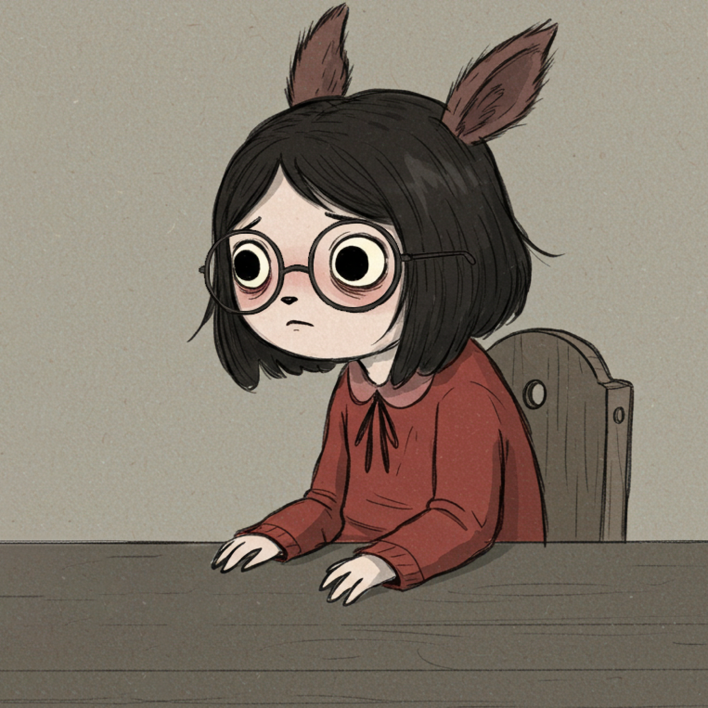

Holaaa, soy Layla.
Tambien conocida como lostkittxn o the queen of carrot flowers, esta pequeña app web funcionara como mi portafolio personal.
Esucha mi musica Mira mi portafolioTambien conocida como lostkittxn o the queen of carrot flowers, esta pequeña app web funcionara como mi portafolio personal.
Esucha mi musica Mira mi portafolio